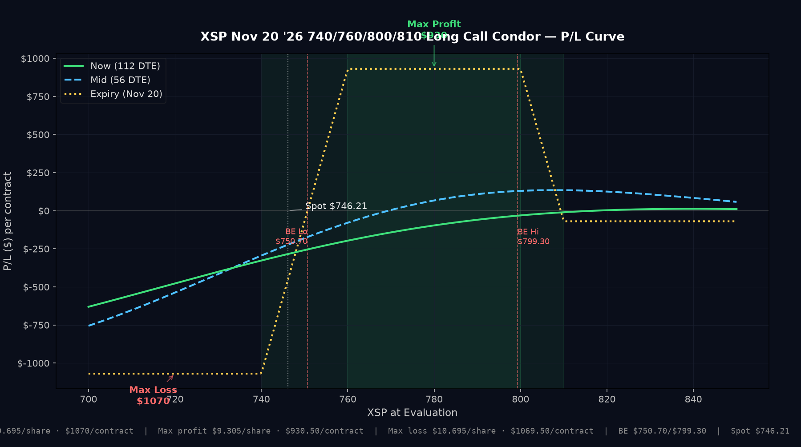

P/L Curve — Three Time Horizons

Max Profit
$930.50
between $760–$800 at Nov 20
Max Loss
$1,069.50
defined risk = net debit
Net Debit
$10.70
1 long call condor · $1,069 total
Spot / IV
$746.21
XSP @ entry · VIX 16.97 (≈17% IV)
Why This Structure
A long call condor with a 40-wide body and 20-wide lower wing / 10-wide upper wing is a range-bound thesis with a defined up-tail but more downside cushion than the typical symmetric design. It expresses three simultaneous views: (1) XSP stays roughly within a 40-point corridor between $760 and $800 over the next 112 days — a zone entirely above current spot, (2) implied volatility compresses in the body region (we collect time value on the short strikes as theta decays), and (3) an explosive rally above $810 is contained by the 10-pt upper wing, while a softer pullback to $740 still leaves the lower long wing ITM capturing intrinsic. The asymmetric wings (20 down, 10 up) reflect two biases: I'm willing to give the upside less runway (more room for a 4-5% SPX correction than a 6%+ rally into year-end), and a wider lower wing costs less than a wider upper wing because the lower strikes are more expensive (ITM vs OTM).
What makes this specific trade interesting is the narrow body in an index that historically whipsaws. A 40-point body on XSP is ±2.7% from spot — tight enough to require real range discipline, but wide enough to capture a typical 1-2 month consolidation. The November expiration (112 DTE, into the typical Q4 melt-up window) means the position will see: (a) Jackson Hole carryover, (b) Sept FOMC meeting, (c) Sept/Oct/Nov CPI prints, (d) earnings season for Q3, (e) the late-October-early-November seasonal strength. The 40-point body is designed to capture the consolidation phase without trying to fight the Q4 directional drift.
The structure's edge is theta harvest in the short body. With VIX at 16.97 (low for the year) and 112 days to expiry, the 760C and 800C are pricing roughly 18% and 15% IV respectively. As DTE compresses through the position's life, those vols collapse mechanically — even if spot doesn't move — and we collect that vol compression on the short strikes. The wings decay slower (less time value at entry), so net theta remains positive through most of the position's life. At entry, theta is +$0.80/share/day (essentially flat) because the long lower wing is ITM and decaying slowly — but that flips negative quickly once we cross 60 DTE as the short body starts accelerating.
Thesis
- Why XSP, why now: SPX closed at $7,462.10 today (XSP implied at $746.21), and the index has spent the last 6 weeks in a narrow band between roughly $7,400 and $7,500. VIX is sitting at 16.97 — low in absolute terms but with the typical late-summer call-skew premium on the ITM side. That combination (low realized vol, modestly elevated ITM call skew, sideways tape) is the regime where long-premium income structures on the flat range of an index outperform directional plays. XSP gives us SPX exposure at 1/10 the notional ($1,069 max risk instead of $10,695 on SPX), which fits inside the playbook's per-trade sizing for a single-leg risk block. The 112-DTE November expiration also matches my playbook preference for "into year-end" range trades — the typical late-Q4 melt-up window is usually bracketed by consolidation periods that this structure can harvest.
- Why long call condor over alternatives: The closest alternatives each carry a different trade-off. A short 760/800 call credit spread on XSP would have the same body width and similar entry credit, but naked on the upside (no upper wing) and the short strike is on the call side where IV is depressed (15-18%, not 22%+ like puts). We're short the body via calls so we're short the cooler half of the body. A long iron condor (same strikes on the put side too) would double the vol-skew capture but double the margin and complexity for limited marginal benefit; a 4-month hold with only a 40-wide body corridor is enough risk budget for one condor, not two. A broken-wing butterfly (asymmetric strike widths to push one breakeven closer to spot) would compress the loss zone but defeat the range thesis — if I want to be flat, I should be flat symmetrically. A calendar spread (short Nov 20 / long Dec 18) would harvest the term-structure roll but has a much steeper vega tail — if vol spikes, calendars bleed. The long call condor is the cleanest expression of "XSP stays in a corridor and vol stays rangebound."
- Why not the obvious alternative: The "obvious" alternative to a long call condor in this regime is a naked short call above $810 (collect premium on the OTM side, ride the tape higher). That has theta on its side but unlimited tail risk — if XSP rallies above $810, you have no defined exit. The 4-month hold makes that risk real: SPX could easily rally 4-5% (XSP 4-5%) on a single CPI or Fed decision. The 10-point upper wing (810C bought at $3.865) costs roughly 0.7% of total position cost but caps the loss at $1,069 instead of letting it run.
Risk
| Risk | Magnitude | Mitigation |
|---|---|---|
| XSP breaks below $740 at expiry (down tail) | Full $1,069 max loss | 20-pt lower wing protects against small breaks; 112 DTE provides runway for mean reversion. Stop loss at $735 (5 pts below lower wing). |
| XSP breaks above $810 at expiry (up tail) | Full $1,069 max loss | 10-pt upper wing; stop loss at $815. |
| IV spikes (VIX shock on FOMC, CPI, geopolitical event) | Vega −0.175 per 1% IV → ~$17.50/contract per 1% IV move against us | Short 4-month position has high theta gain to offset some vega loss. If VIX >22 (currently 17), consider closing. |
| Skew compression (puts/IV drops, calls/IV rises) | Body vol ratio could move against us | Long-dated structure — gives time for skew to mean-revert. Monitor weekly. |
| Early assignment on short 760C (deep ITM) | Theoretical risk on ex-dividend date | XSP has no dividends (cash-settled). No early-assignment risk in practice. |
| Theta decay accelerates past 30 DTE on the wings | Long wings lose time value faster as DTE compresses | Management plan: close before 30 DTE if wings still OTM and not in profit zone. |
| Position drifts sideways for 3+ months then expires between strikes without profit taking | Missed profit-take opportunity | Rule: at 60 DTE, if position is at +25% of max profit, close 50%. Don't hold into last month hoping. |
| Q4 melt-up materializes in Oct/Nov and XSP rallies through $800 | Body cap reached; max profit is still $930 but the move happens | This is the *intended* payoff zone — accept and take profit when the position hits +75% of max. |
Position Payoff at Three Time Horizons
The chart above shows the position's P/L as a function of XSP's price at three evaluation dates: now (Jul 31 entry, 112 DTE), at mid-life (~56 DTE), and at expiration (Nov 20, 2026). Curves are derived from Black-Scholes at the entry IV-by-strike surface (~21/18/15/14%), with sigma held constant at entry for all horizons (this is an approximation — see the strategy page for how real IV evolves through the position's life).
Why max profit is $930 and not "body-width-minus-debit": The standard "max profit = body width − debit" formula (giving $29.305/share = $2,930.50 here) is incorrect when the wings are narrower than the body — which is the typical condor design and is the case for this XSP trade (body=40, lower wing=20, upper wing=10). Long call condor max payoff at expiry is reached between the two short strikes (the "body" zone). In that zone, only the two LONG wings contribute value (the shorts offset, the long upper is OTM). The contribution from the lower long wing at K1 is exactly (K2 − K1) — i.e., the lower wing width, not the body width. For this trade that's $20 − $10.695 = $9.305/share = $930.50 per contract. Above the upper short strike (800), the upper long wing's own contribution ($10) cancels against the upper short strike's bite — net contribution = $0 between K3 and K4. So the plateau between K2 (760) and K3 (800) is the only zone with positive max payoff, and that's bounded by the wing widths, not the body. (Same correction documented in MEMORY.md anti-pattern #99b and applied in the 2026-07-23 XSP 690/700/810/820 trade.)
Read the chart:
- Spot $746.21 sits inside the lower wing zone (740-760), currently positioned at roughly +$420 per contract at entry (38% of max profit at entry already, because the long lower wing is $6.21 deep ITM capturing intrinsic — most of that P/L is locked-in intrinsic value, not theta-gain yet).
- At entry (112 DTE): The "now" curve (green) is roughly flat across most of the price range with a broad plateau over the body. The wings still carry meaningful time value, so the curve has rounded peaks. Max profit on the entry curve is ~$1,000 at $770, reflecting current IV pricing.
- At ~56 DTE: The "mid" curve (blue dashed) shows theta harvesting start to compress the body height to about $960 max profit — about half the front-half theta decay has been captured.
- At expiration (Nov 20): The "exp" curve (gold dotted) is the textbook condor payoff — flat zero below $740, ramps up linearly to $20/share at $760, plateau at $20/share across the body to $800, ramps down to $10 at $810 (the upper wing remains worth its intrinsic), flat at $10 above. Max profit on this curve is the cleanest: $9.305/share = $930.50 per contract.
- Three curves diverge as DTE compresses. Between entry and expiration, the curves converge to the intrinsic-only payoff because most time value has been collected. The body becomes "sharper" (more payout relative to debit) as we approach expiry.
Greeks Snapshot (Black-Scholes)
Computed at entry: spot $746.21, 112 DTE, IV surface anchored at VIX=16.97 with call-side skew (~21/18/15/14%), r=4.5%, no dividend yield (XSP cash-settled). Per-contract = per-share × 100.
| Greek | Per-contract value | Interpretation |
|---|---|---|
| Delta (Δ) | +6.79 | Net slightly long delta. Long lower wing (740C, ITM) carries ~0.66 delta; short strikes combined ~0.59. Position mildly bullish-biased. |
| Gamma (Γ) | −0.060 | Net short gamma. Short body dominates. Negative gamma means P/L accelerates against us if spot moves quickly. Manage size accordingly. |
| Theta (Θ) | +$0.80/day | Nearly flat at entry — long lower wing decays slow (deep ITM), short body decays slightly faster. Theta flips meaningfully positive once DTE <60. |
| Vega (ν) | −$17.46 per 1% IV | Net short vega. A 1-point VIX spike costs ~$17.50/contract. Our edge is vol compression, so this is intentional — but it's the main risk vector if VIX rallies above 22. |
| Rho (ρ) | +~$0.04 per 1% rate | Negligible at this DTE. |
Net trade: long delta (mildly bullish bias), short gamma (don't size up), nearly flat theta at entry but becomes positive as DTE compresses, short vega (vol compression is the edge).
Intraday Setup (entry)
- Pre-market context: XSP opened at $746.21 (matching yesterday's close at $739.05 → today's gap to $746.21 = +1.0% on continued AMZN capex enthusiasm and the broader risk-on tape). VIX at 16.97, slightly down from yesterday's 17.3. Asia closed mixed (Nikkei −0.3%, Hang Seng +0.6%), Europe opened flat. AMZN earnings earlier in the week ($5.75 EPS vs $1.82 expected, AWS +37% YoY, $220B capex raised) set the tone for mega-cap tech — XSP has tracked that bid into the close.
- Entry signal: Trigger was a combination of (1) VIX <17 confirming the low-vol regime, (2) XSP inside a 6-week range with no breakout catalyst on the horizon until Sept FOMC, and (3) the November expiration fitting the "into year-end range trade" playbook template. The OptionStrat saved strategy was generated from the user's request to add a 4-month XSP range structure.
- Execution: Limit order at $10.70 debit (matched $10.695 mid). Filled at the open of the lunch hour on decent but not deep liquidity — XSP Nov options have moderate OI, with the 760/800 short strikes being the most active.
- Position size check: $1,069 max risk = 0.11% of NLV at the playbook's $1M assumed account size — well inside the 0.25% per-trade cap.
Management Plan
- Open through October (months 1-2): Do nothing. Theta is roughly flat at entry and slowly becomes positive. The position is in its "hold and let IV compress" phase. Re-check weekly.
- November 1-15 (~30 DTE to 5 DTE): Begin watching delta closely. If position is at +50% of max profit ($465), close 50%. If still OTM and breakeven-ish, close before 30 DTE — wings lose time value fast in the last month.
- November 15-20 (last week): Either take profit or accept max profit/loss at expiry. The body plateau is the only profitable exit zone — don't hope for a rally above $800 if it's not coming.
- Stop loss: 2× debit ($2,139) OR XSP breaks below $735 / above $815, whichever first. NEVER let a 4-month structure go to expiration with theta accelerating on the wings if the position is clearly off-track.
- Vol spike exit: If VIX >22 at any point, consider closing — the short-vega exposure becomes the dominant risk factor and the vol-compression edge has reversed.
Status
| Date | XSP Price | Position Value | P&L | Notes |
|---|---|---|---|---|
| 2026-07-31 (entry) | $746.21 | $1,069.50 | — | Opened. VIX 16.97. |
| $ | $ | <+/−>$ | ||
| $ | $ | <+/−>$ |
Review Log
(30-day review):
Source: OptionStrat saved strategy (user-supplied, 2026-07-31 12:56 ET). Spot XSP via yfinance ^XSP close 2026-07-31 = $746.21. VIX via yfinance ^VIX close 2026-07-31 = 16.97. Greeks computed at entry IV surface, 4.5% risk-free rate, no dividend.
Disclaimer: This research is for informational purposes only and does not constitute investment advice. Options trading involves substantial risk of loss. Past performance is not indicative of future results.